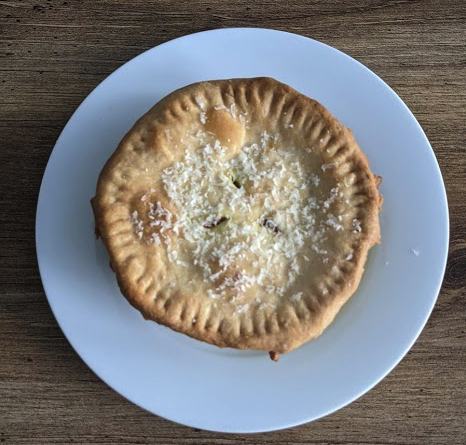
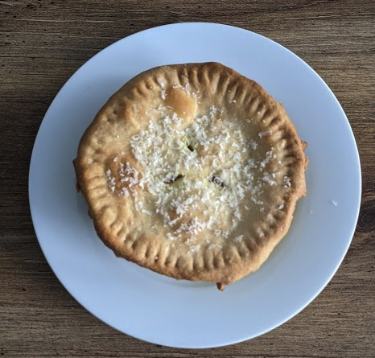
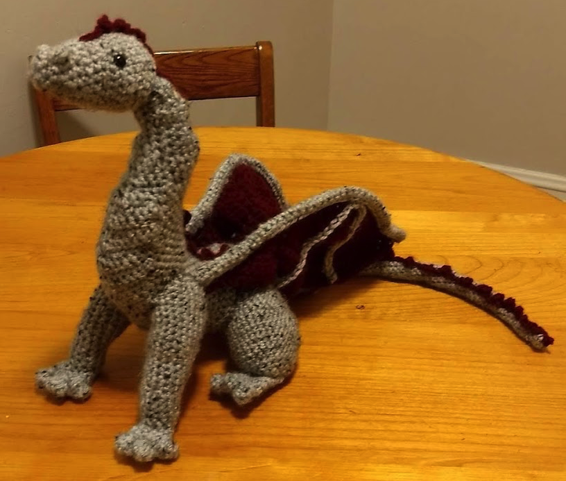

Hi! I'm Adina Feinstein. I'm a 4th year PhD Candidate at the University of Chicago, but you may already know that from my home page.
 

Outside of work, I love doing lots of miscellaneous things! For one, I'm an avid baker of everything except sourdough (because I almost instantly accidentally killed my starter). I love baking easily shareable foods, like cupcakes and muffins (they're different), and cinnamon buns. I've acquired what may be the 2 most important skills ever during the COVID-19 pandemic: (1) cracking an egg with one hand and (2) making pie dough from scratch without a recipe. Fortunately, not many people had to try the products of developing these skills.
I also love crafting! My main medium is string/yarn and I stick to mostly crocheting and needlework. Sometimes you'll even catch me crocheting during conferences because it helps me focus! Most of my projects are in the style of amigurumi, the Japanese art of crocheting/knitting small stuffed yarn creatures (a.k.a. cute stuffed animals). The biggest project I've completed is this dragon! For scale (heh), the dragon is a little over two feet from head to tail.